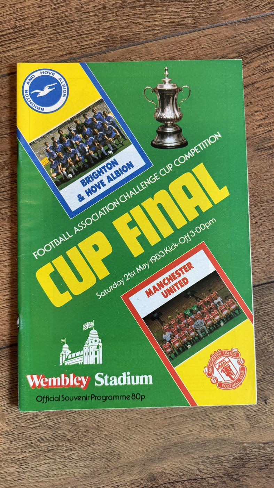
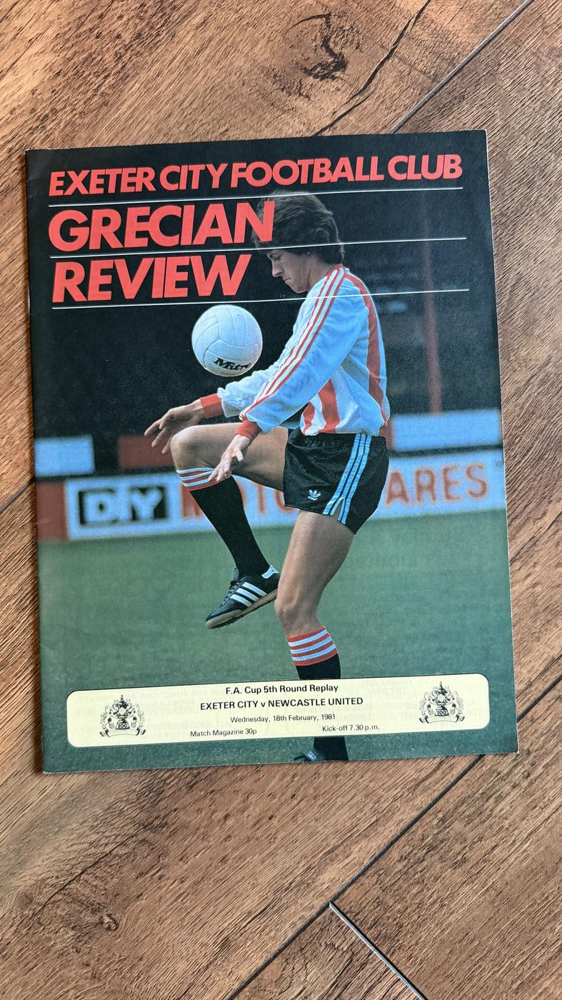
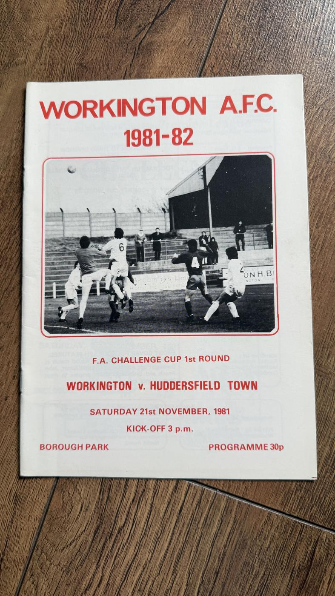
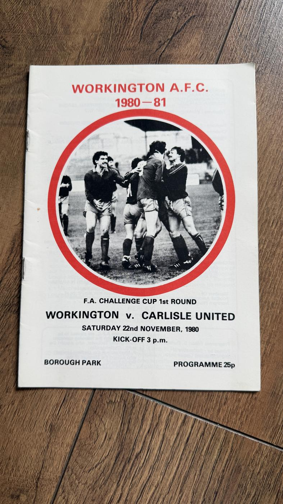
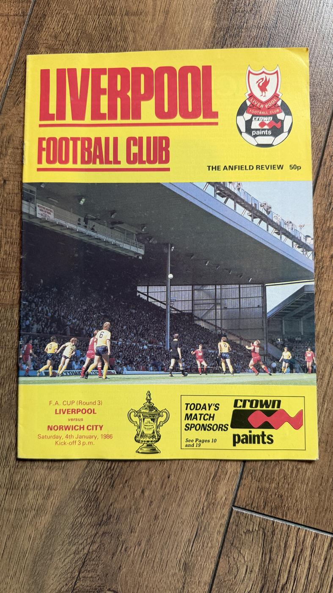

FA Cup


FP-0029
Manchester City vs Tottenham Hotspur
£8 open to reasonable offers
Available
Enquire about FP-0029


FP-0039
Chelsea vs Leeds United
£30 open to reasonable offers
Available
Programme for the 1970 FA Cup Final Replay between Chelsea and Leeds United at Old Trafford, 29 April 1970, published by Manchester United as the host club. The replay - one of the most famously brutal finals in English football history - drew a record television audience of some 28 million, but far fewer fans made the trip north than had been at Wembley, so this edition had a much smaller print run than the original Wembley final programme and is the one collectors chase.
Enquire about FP-0039
FP-0040
Manchester City vs Ipswich Town
£5 open to reasonable offers
Available
Enquire about FP-0040

FP-0045
Brighton & Hove Albion vs Manchester United
£3 open to reasonable offers
Available
Enquire about FP-0045

FP-0046
Nottingham Forest vs Tottenham Hotspur
£7 open to reasonable offers
Includes matching ticket
Available
Enquire about FP-0046


FP-0082
Burnley vs Sunderland
£1.50 open to reasonable offers
Possibly signed
Available
Burnley's official programme for the FA Cup 4th Round tie against Sunderland at Turf Moor, 27 January 1979, with several handwritten signatures across the cover. The autographs appear to be Clarets players of the era - the names suggest Billy Ingham, Peter Noble and Steve Kindon among them - but they are unauthenticated, so please judge the close-up photographs for yourself.
Enquire about FP-0082

FP-0088
Blyth Spartans vs Wrexham
£2 open to reasonable offers
Available
Souvenir programme from the most famous night of Blyth Spartans' legendary 1977-78 FA Cup run: the 5th Round Replay against Wrexham, moved to Newcastle's St James' Park to accommodate the crowd - 42,267 turned out to watch the non-league side. This is the programme from the match where the fairy tale finally ended, and it remains one of the genuinely sought-after non-league issues of the decade, with crossover appeal to Newcastle and Wrexham collectors too.
Enquire about FP-0088
FP-0108
Carlisle United vs Lincoln City
£1.50 open to reasonable offers
Part of a bundle →
Available
Enquire about FP-0108

FP-0110
Carlisle United vs Tottenham Hotspur
£1.50 open to reasonable offers
Available
Enquire about FP-0110

FP-0111
Carlisle United vs Hull City
£1.50 open to reasonable offers
Part of a bundle →
Available
Enquire about FP-0111

FP-0135
Exeter City vs Newcastle United
£3 open to reasonable offers
Available
Enquire about FP-0135


FP-0146
Ipswich Town vs Carlisle United
£3 open to reasonable offers
Available
Enquire about FP-0146

FP-0163
Bolton Wanderers vs Newcastle United
£11.50 open to reasonable offers
Available
A curiosity for collectors of programme oddities: the FA Cup 5th Round 2nd Replay between Bolton Wanderers and Newcastle United, played at a neutral Elland Road on 23 February 1976 after two drawn ties - with the programme carrying Leeds United branding, as Leeds produced it in their role as host club. Neutral-venue replays with the ground owner's cover on someone else's cup tie are a recognised collecting niche, and this is a tidy example of the genre.
Enquire about FP-0163
FP-0193
Manchester United vs Southampton
£3 open to reasonable offers
Part of a bundle →
Available
Enquire about FP-0193

FP-0216
Manchester City vs Rotherham United
£3 open to reasonable offers
Available
Enquire about FP-0216

FP-0218
Peterborough United vs Newcastle United
£1.50 open to reasonable offers
Available
Enquire about FP-0218

FP-0235
Sheffield United vs Newcastle United
£3 open to reasonable offers
Available
Enquire about FP-0235

FP-0238
Stoke City vs Blyth Spartans
£1.50 open to reasonable offers
Available
Enquire about FP-0238

FP-0258
Workington vs Chesterfield
£3 open to reasonable offers
Part of a bundle →
Available
Workington Reds v Chesterfield, FA Cup 2nd Round Replay at Borough Park, 16 December 1970, priced one shilling. Workington lost their Football League place in 1977 and never returned, which makes surviving programmes from their League days - cup ties especially - genuinely hard to find. A midweek December replay under the Borough Park lights, from a club the League left behind.
Enquire about FP-0258
FP-0263
Workington vs Huddersfield Town
£1.50 open to reasonable offers
Available
Workington v Huddersfield Town, FA Cup 1st Round at Borough Park, 21 November 1981 - by this point the Reds were a non-league club, having lost their Football League place in 1977, and a cup tie against League opposition was exactly the kind of afternoon Borough Park lived for. Non-league era Workington issues had small print runs and turn up far less often than you might expect.
Enquire about FP-0263
FP-0268
Rotherham United vs Workington
£1.50 open to reasonable offers
Available
Enquire about FP-0268

FP-0271
Workington vs Carlisle United
£1.50 open to reasonable offers
Available
A Cumbrian derby in the FA Cup: Workington v Carlisle United, 1st Round at Borough Park, 22 November 1980. Meetings between the county's two senior clubs are the most sought-after Workington fixtures of all, and this one came after the Reds had dropped into non-league football, giving the tie an extra edge. Defunct-League-club scarcity and local derby appeal in one programme.
Enquire about FP-0271
FP-0275
Workington vs Brentford
£1.50 open to reasonable offers
Part of a bundle →
Available
Workington Reds v Brentford, FA Cup 3rd Round at Borough Park, 2 January 1971. Reaching the 3rd Round was a proper occasion for a Fourth Division club, and this New Year cup tie is one of the stronger fixtures among surviving Workington programmes. The Reds lost their Football League status in 1977, so material from Borough Park's League years is in permanently short supply.
Enquire about FP-0275


FP-0334
Newcastle United vs Ipswich Town
£3 open to reasonable offers
Available
Enquire about FP-0334

FP-0338
Newcastle United vs AFC Bournemouth
£3 open to reasonable offers
Available
Enquire about FP-0338


FP-0347
Newcastle United vs Sheffield Wednesday
£3 open to reasonable offers
Available
Enquire about FP-0347

FP-0348
Newcastle United vs Exeter City
£2.50 open to reasonable offers
Available
Enquire about FP-0348


FP-0360
Newcastle United vs Sheffield United
£4 open to reasonable offers
Available
Enquire about FP-0360

FP-0369
Newcastle United vs Brentford or Colchester United
£2 open to reasonable offers
Available
Enquire about FP-0369
 2 photos
2 photos
FP-0370
Newcastle United vs Colchester United
£2.50 open to reasonable offers
Available
Enquire about FP-0370

FP-0374
Newcastle United vs Bournemouth
£2.50 open to reasonable offers
Available
Enquire about FP-0374

FP-0375
Newcastle United vs Port Vale
£2.50 open to reasonable offers
Available
Enquire about FP-0375

FP-0393
Newcastle United vs Peterborough United
£3.50 open to reasonable offers
Available
Enquire about FP-0393





TICKET-0040
Tottenham Hotspur vs Nottingham Forest
£10 open to reasonable offers
Fair
Available
Ticket for the 1991 FA Cup Final between Tottenham Hotspur and Nottingham Forest at Wembley, 18 May 1991 - the final remembered for Paul Gascoigne's injury and Spurs' extra-time win. This example was allocated through Southampton FC as a neutral-supporter ticket, an unusual detail in itself. Condition is honest rather than pristine: there is tape residue and staining across the upper portion and the edges are worn, though all the core printed details remain legible.
Enquire about TICKET-0040
TICKET-0127
Aston Villa vs Blackburn Rovers / Liverpool (quarter-final winner)
£10 open to reasonable offers
Ticket stub for the 2015 FA Cup Semi-Final at Wembley, 19 April 2015, in which Aston Villa beat Liverpool 2-1. A nice quirk: it was printed as a 'Blackburn Rovers/Liverpool' supporters ticket before the quarter-final replay had settled who Villa would face. Clean, fully legible and showing minimal wear.
Enquire about TICKET-0127
Interested in an item or bundle?
Please email terracearchive@icloud.com, or message me through the Facebook group where you found this catalogue. Include the item ID, for example FP-0042 or MEM-0011. Prices are a guide, not a demand - reasonable offers are welcome. Payment by PayPal or bank transfer once we've agreed a sale. Also open to job-lot offers - the whole collection, all programmes, or any other grouping you'd like - get in touch to discuss.
Please email terracearchive@icloud.com, or message me through the Facebook group where you found this catalogue. Include the item ID, for example FP-0042 or MEM-0011. Prices are a guide, not a demand - reasonable offers are welcome. Payment by PayPal or bank transfer once we've agreed a sale. Also open to job-lot offers - the whole collection, all programmes, or any other grouping you'd like - get in touch to discuss.